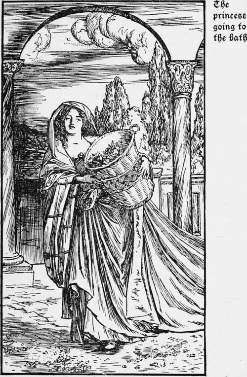
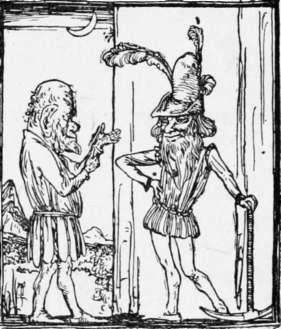

The Fox's Brush. Continued
Description
This section is from the book "Household Tales by Brothers Grimm", by Brothers Grimm. Also available from Amazon: Household Tales by Brothers Grimm.
The Fox's Brush. Continued
So he set out once more on his journey, sighing, and in great despair; when, on a sudden, he met his good friend the fox taking his morning's walk. "Heyday, young gentleman!" said Reynard; "you see now what has happened from you not listening to my advice. I will still, however, tell you how you may find the golden horse, if you will but do as I bid you. You must go straight on till you come to the castle, where the horse stands in his stall. By his side will lie the groom fast asleep and snoring; take away the horse softly; but be sure to let the old leathern saddle be upon him, and do not put on the golden one that is close by." Then the young man sat down on the fox's tail; and away they went over stock and stone, till their hair whistled in the wind.
All went right, and the groom lay snoring, with his hand upon the golden saddle. But when the lad looked at the horse, he thought it a great pity to keep the leathern saddle upon it. "I will give him the good one," said he: "I am sure he is worth it." As he took up the golden saddle, the groom awoke, and cried out so loud, that all the guards ran in and took him prisoner; and in the morning he was brought before the king's court to be judged, and was once more doomed to die. But it was agreed that if he could bring thither the beautiful princess, he should live and have the horse given him for his own.
Then he went his way again very sorrowful; but the old fox once more met him on the road, and said, " Why did you not listen to me ? If you had, you would have carried away both the bird and the horse. Yet I will once more give you counsel. Go straight on, and in the evening you will come to a castle. At twelve o'clock every night the princess goes to the bath: go up to her as she passes, and give her a kiss, and she will let you lead her away; but take care you do not let her go and take leave of her father and mother." Then the fox stretched out his tail, and away they went over stock and stone till their hair whistled again.
As they came to the castle all was as the fox had said; and at twelve o'clock the young man met the princess going to the bath, and gave her the kiss; and she agreed to run away with him, but begged with many tears that he would let her take leave of her father. At first he said, " No! " but she wept still more and more, and fell at his feet, till at last he yielded; but the moment she came to her father's door the guards awoke, and he was taken prisoner again.
So he was brought at once before the king, who lived in that castle. And the king said, " You shall never have my daughter, unless in eight days you dig away the hill that stops the view from my window." Now this hill was so big that all the men in the whole world could not have taken it away : and when he had worked for seven days, and had done very little, the fox came and said, " Lie down and go to sleep! I will work for you." In the morning he awoke, and the hill was gone; so he went merrily to the king, and told him that now it was gone he must give him the princess.
Then the king was obliged to keep his word, and away went the young man and the princess. But the fox came and said to him, "That will not do; we will have all three,—the princess, the horse, and the bird." "Ah!" said the young man, " that would be a great thing; but how can it be ? "
"If you will only listen," said the fox, "it can soon be done. When you come to the king of the castle where the golden horse is, and he asks for the beautiful princess, you must say, ' Here she is!' Then he will be very glad to see her, and will run to welcome her; and you will mount the golden horse that they are to give you, and put out your hand to take leave of them; but shake hands with the princess last. Then lift her quickly on to the horse, behind you; clap your spurs to his side, and gallop away as fast as you can."
All went right: then the fox said, " When you come to the castle where the bird is, I will stay with the princess at the door, and you will ride in and speak to the king; and when he sees that it is the right horse, he will bring out the bird: but you must sit still, and say that you want to look at it, to see whether it is the true golden bird or not; and when you get it into your hand, ride away as fast as you can."
This, too, happened as the fox said : they carried off the bird; the princess mounted again, and off they rode till they came to a great wood. On their way through it they met their old friend Reynard again, and he said, "Pray kill me, and cut off my head and my brush!" The young man would not do any such thing to so good a friend: so the fox said, " I will at any rate give you good counsel: beware of two things ! ransom no one from the gallows, and sit down by the side of no brook! " Then away he went. " Well," thought the young man, "it is no hard matter, at any rate, to follow that advice."
So he rode on with the princess, till at last they came to the village where he had left his two brothers. And there he heard a great noise and uproar: and when he asked what was the matter, the people said, "Two rogues are going to be hanged." As he came nearer, he saw that the two men were his brothers, who had turned robbers. At the sight of them in this sad plight his heart was very heavy, and he cried out, "Can nothing save them from such a death ?" but the people said "No! " unless he would bestow all his money upon the rascals, and buy their freedom, by repaying all they had stolen. Then he did not stay to think about it, but paid whatever was asked; and his brothers were given up, and went on with him towards their father's home.
Now the weather was very hot; and as they came to the wood where the fox first met them, they found it so cool and shady under the trees, by the side of a brook that ran close by, that the two brothers said, " Let us sit down by the side of this brook and rest a while, to eat and drink." "Very well!" said he, and forgot what the fox had said, and sat down on the side of the brook: and while he thought of no harm coming to him they crept behind him, and threw him down the bank, and took the princess, the horse, and the bird, and went home to the king their master, and said, "All these we have won by our own skill and strength." Then there was great merriment made, and the king held a feast, and the two brothers were welcomed home; but the horse would not eat, the bird would not sing, and the princess sat by herself in her chamber, and wept bitterly.
The youngest son fell to the bottom of the bed of the stream. Luckily, it was nearly dry, but his bones were almost broken, and the bank was so steep that he could find no way to get out. As he stood bewailing his fate, and thinking what he should do, to his great joy he spied his old and faithful friend the fox, looking down from the bank upon him. Then Reynard scolded him for not following his advice, which would have saved him from all the troubles that had befallen him. "Yet," said he, " silly as you have been, I cannot bear to leave you here; so lay hold of my brush, and hold fast! " Then he pulled him out of the river, and said to him, as he got upon the bank, " Your brothers have set a watch to kill you if they find you making your way back." So he dressed himself as a poor piper, and came playing on his pipe to the king's court. But he was scarcely within the gate when the horse began to eat, and the bird to sing, and the princess left off weeping. And when he got to the great hall, where all the court sat feasting, he went straight up to the king, and told him all his brothers' roguery. Then it made the king very angry to hear what they had done, and they were seized and punished; and the youngest son had the princess given to him again; and he married her; and after the king's death he was chosen king in his stead.
After his marriage he went one day to walk in the wood, and there the old fox met him once more, and besought him, with tears in his eyes, to be so kind as to cut off his head and his brush. At last he did so, though sorely against his will, and in the same moment the fox was changed into a prince, and the princess knew him to be her own brother, who had been lost a great many years ; for a spiteful fairy had enchanted him, with a spell that could only be broken by some one getting the golden bird, and by cutting off his head and his brush.

Continue to:
Tags
fairy tales, children's stories, brothers grimm, household tales